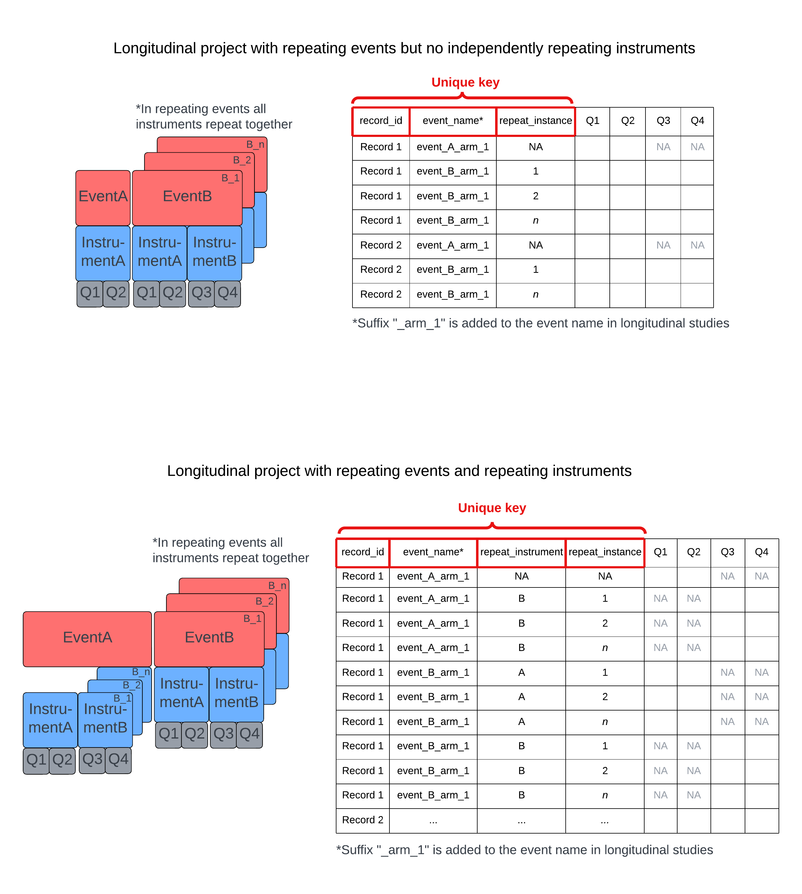

4 Data Structure
4.1 Example REDCap Projects and Data Structures

The base of every unique key is always the record_id. In non-longitudinal projects, there may also be a repeat_instrument and repeat_instance column if these features are enabled. In longitudinal projects, there will be an event_name column, as well as a repeat_instance column in the case of repeating events and a repeat_instrument column in the case of independently repeating instruments.
This unique key applies for studies with and without multiple arms. Each value for the event_name includes the study arm as a suffix. The suffix will automatically be *“_arm_1”* for longitudinal studies without additional arms.
These special unique key fields must be appropriately filled out in the data being imported to REDCap.
4.2 Repeating Events and Independently Repeating Instruments
Data is exported from REDCap projects as one large table where the length of the table (number of columns) is equal to all the fields across all project instruments.
Assuming no repeating instruments or events, there is one row per record in non-longitudinal projects and one row per record-event in longitudinal projects. In the case of independently repeating instruments and repeating events, there is one additional row per repeat instance per record. Each row has all fields across all instruments, but the fields (columns) not associated with the instruments for that event (rows) will be NA.
Regardless of how you choose to export REDCap project data (directly in REDCap or using an API), the data structure will be the same. Here is an example of the data structure for the REDCap project we will be using in this tutorial.
In this example:
- The ‘close_contacts’ instrument repeats independently within the ‘notifications_arm_1’ event (only responses to the ‘close_contacts’ instrument are in these rows with one row per record per instance of the instrument).
- One other instrument is also in the ‘notifications_arm_1’ event but does not repeat. This data populates a seperate row where the redcap_event_name = “notifications_arm_1”, but the redcap_repeat_instrument = “NA” and the redcap_repeat_instance = “NA”. Non-repeating instruments in an event will have their own row, seperate from independently repeating instruments in that same event.
- The ‘case_intake_arm_1’ event repeats as an entire event, so each repeat of the event per record will occupy one row with the redcap_repeat_instance variable signifying the instance number.
- The ‘personal_info_arm_1’ is not repeating, nor are the instruments within this event, so it occupies one row per record-event.
Note: Since this is a longitudinal project example, the arm name is automatically appended as a suffix in the redcap_event_name column. In this project there is only one arm, so all events are exported with the “arm_1” suffix. However, if there were mutliple arms, the suffix would distinguish which arm each event is in.
Checking the instrument event map will give you a quick understanding of the project structure. See Chapter 14 for how to do this via API.
4.3 Notes on REDCap Data Types and API Exports
4.3.1 Standard Field Types
- text
- notes
- calculated field
- dropdown
- radio
- checkbox
- yes/no
- true/false
- file upload
- descriptive
- dynamic query (sql)
4.3.2 Non-Standard Field types
- instrument_name_complete
In addition to the standard types, each instrument (form) has a column to indicate if the instrument is complete/incomplete/unverified. The instrument_name_complete field is exported via standard API call.
4.3.3 API Export Records (default settings)
- text
- notes
- calculated field
- dropdown
- radio
- checkbox
- yes/no
- true/false
- file upload
descriptive- dynamic query (sql)
- instrument_name_complete
Note: “descriptive” field type is NOT exported
4.4 Checkboxes
Checkboxes are exported as a wide data set with each checkbox option stored as its own variable. These variables will be appended with a double underscore and the number that the choice option is assigned within REDCap. Alternatively, the actual choice can be viewed if you export the dataset with labeled headers.
See below for how the checkbox variable sympoms_exp exports. This checkbox had 11 different options and so it will occupy 11 columns. You can also see this question is asked in the case_intake_arm_1 event and so the value is NA in any row not associated with this event.
Note: When putting the exported data into a pandas dataframe in Python, any raw values for coded data that are integer strings in REDCap become floats with a decimal appended. If this exported dataset were to be re-imported into REDCap, errors will arise for all of the fields with the now float-type data when REDCap is expecting an integer. See the Python section under Section 27.4 for more.